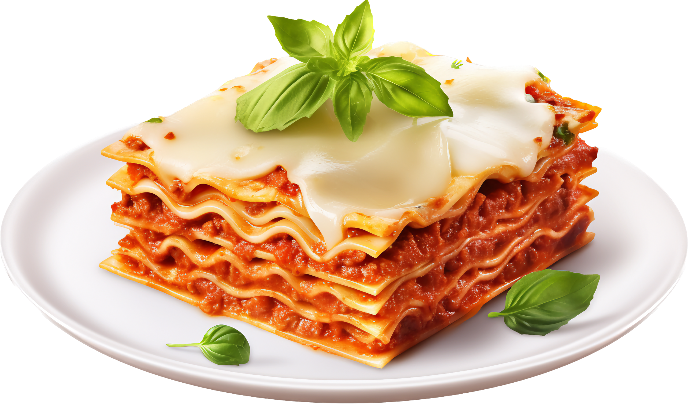

Back to list of Odin Recipes
Lasagna

Lasagna is a delightful Italian masterpiece that layers love and flavor in every bite!
Picture wide, ruffled noodles embracing a rich, meaty sauce, creamy ricotta,
and a gooey blanket of melted cheese, all baked to bubbly perfection.
This dish is like a warm hug on a plate, perfect for family gatherings or cozy nights in.
Whether you’re twirling your fork through its cheesy goodness or savoring the aromatic herbs,
lasagna is sure to make your taste buds dance with joy!
Ingredients
- Lasagna noodles (regular or no-boil)
- Ground beef (or a mix of ground beef and sausage)
- Ricotta cheese
- Shredded mozzarella cheese
- Grated Parmesan cheese
- Tomato sauce (homemade or store-bought)
- Canned tomatoes (diced or crushed)
- Eggs (optional, for mixing with ricotta)
- Garlic (minced)
- Onion (chopped)
- Olive oil
- Fresh basil (or dried basil)
- Oregano (dried)
- Salt and pepper (to taste)
Steps to Make Lasagna
- **Preheat the Oven**:
- Preheat your oven to 375°F (190°C).
- **Prepare the Meat Sauce**:
- In a large skillet, heat olive oil over medium heat.
- Add chopped onions and minced garlic, sautéing until softened.
- Add ground beef (and sausage, if using) and cook until browned.
- Stir in tomato sauce and canned tomatoes, along with herbs (basil, oregano), salt, and pepper.
- Let it simmer for about 20 minutes.
- **Prepare the Cheese Mixture**:
- In a bowl, combine ricotta cheese, an egg (if using), grated Parmesan cheese, and a pinch of salt and
pepper.
- Mix well.
- **Cook the Lasagna Noodles**:
- If using regular lasagna noodles, cook them according to package instructions until al dente.
- Drain and set aside.
- **Layer the Lasagna**:
- In a baking dish, spread a thin layer of meat sauce on the bottom.
- Place a layer of lasagna noodles over the sauce.
- Spread a layer of the ricotta cheese mixture on top of the noodles.
- Add a layer of shredded mozzarella cheese.
- Repeat the layers (sauce, noodles, ricotta, mozzarella) until all ingredients are used, finishing with a
layer of sauce and a generous topping of mozzarella cheese.
- **Bake the Lasagna**:
- Cover the baking dish with aluminum foil (to prevent sticking) and bake in the preheated oven for about
25 minutes.
- Remove the foil and bake for an additional 15-20 minutes, or until the cheese is bubbly and golden.
- **Let It Rest**:
- Once baked, remove the lasagna from the oven and let it rest for about 15 minutes before
slicing.
This helps the layers set.
- **Serve and Enjoy**:
- Cut into squares and serve warm, garnished with fresh basil if desired!
- Enjoy your delicious homemade lasagna! 🍽✨✨
✨
Back to list of Odin Recipes